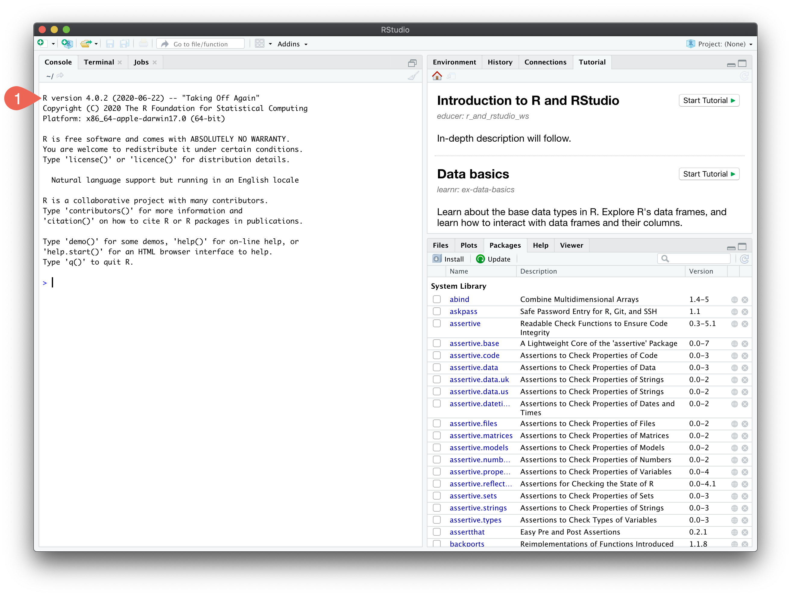

Installing R and RStudio
Install software
To complete these installs, you must have administrator privileges on your machine. Choose the version appropriate for your operating system. You can also watch a video for a Mac, or a Windows install (you only need to install R and RStudio, and none of the other programs mentioned in the videos). Please also note that the versions of R and RStudio in the video are older. Instead, install or update to the latest version supported by your operating system.
- R https://cran.r-project.org/
- version 4.0.3 (only for macOS Yosemite or older: legacy version 3.3.3)
- Choose among “Download and Install R” section (not “Source Code for all Platforms”).
- You must have R installed before proceeding to step 2.
- RStudio https://rstudio.com/products/rstudio/download/#download
- Version 1.3.1093 (only for macOS El Capitan and older: legacy version 1.1.463)
- Select FREE Desktop version.
- Choose among “Installers for Supported Platforms” section (not “Zip/Tarballs”) or follow the link to older versions of RStudio if you need a legacy version.
Check that it worked
After you open RStudio, it should look like the screenshot below with the left panel (the “console”) listing the most current version of R for your operating system .

Troubleshooting
RStudio looks incorrect
If you only see a single panel instead of 3 like in the example image, you likely opened base R instead of RStudio. Look for the RStudio symbol  to open the correct program.
to open the correct program.
If you confirmed RStudio is open, but don’t see the same panels as depicted above then in RStudio menu bar select View > Panes > Show all panes.
My computer won’t let me open the downloaded files to install them
Mac: right-click and choose “Open With” > “Installer.app (default)” and choose “Open” when prompted if you are sure you want to open the file
Windows: right-click and choose “Run as administrator”
Still doesn’t work
Please come to one of the office hours for your course to get help.